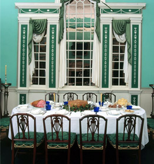
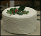
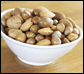
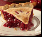
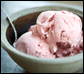
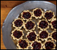

Dessert with the Washingtons
Served after dinner, Large Dining Room, Mount Vernon


Cake
X
Cake was for special occasions at Mount Vernon. Mrs. Washington had a famous "Great Cake" that was specially made for the Christmas holidays.
Why was this cake called the Great Cake? The recipe called for 40 eggs, 4 pounds of butter and 4 pounds of sugar. That is a lot of ingredients! Most cakes today only use about 4 eggs and 1/2 a pound of sugar!
Fruit

Nuts

Pie

Ice Cream
X
In 1784, the Washingtons purchased a “Cream Machine for Ice” so they could make a summer favorite…ice cream!
The ice cream machine was a large bucket where slaves mixed together cream, sugar and strawberries until they were whipped together. Washington's ice cream would be a lot softer than the ice cream we have today.

Tarts
What is there to drink?

 The Washington's loved ice cream! Freezers didn't exist yet, so the Washington's had ice collected from the river during cold months to chill food, drinks and…ice cream!
The Washington's loved ice cream! Freezers didn't exist yet, so the Washington's had ice collected from the river during cold months to chill food, drinks and…ice cream!